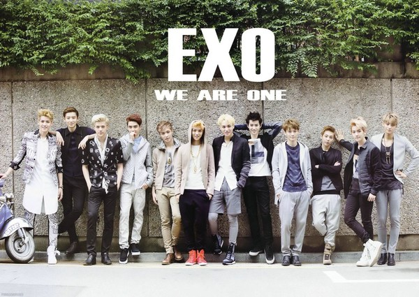
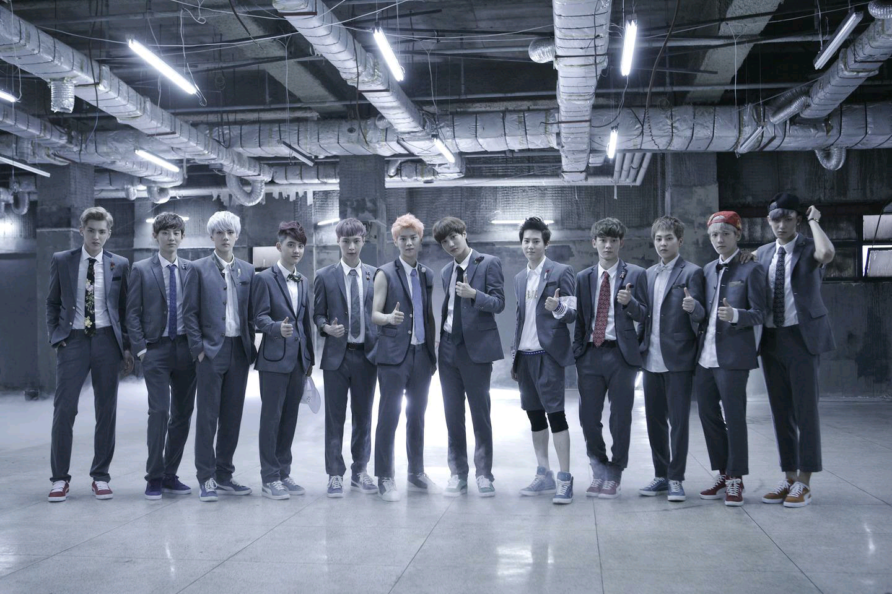

《咆哮》（韩文：으르렁；英语：Growl）是由中韩男团组合EXO新专辑的一首主打歌。这首歌曲拥有韩国韩语和中国普通话两个版本，专辑《XOXO》重新包装版本的后续单，其中还包括《Lucky》和《XOXO》，总共收录三首歌曲。
十二月的奇迹（英语：MiraclesinDecember；韩语：12월의기적）由中韩艺人偶像男团EXO演唱，音乐下载于2013年12月5日发布，歌曲与专辑仍然以中韩两种语言录制发行[1]。《十二月的奇迹》获得了乐评人士的正面评价和商业上的成功。这首歌一经推出便打入韩国的数个音乐排行榜前5名。《十二月的奇迹》被选为主打歌，并成为专辑中唯一的一张单曲发行。并被宣传会与歌曲《圣诞节》在各种音乐会被演唱